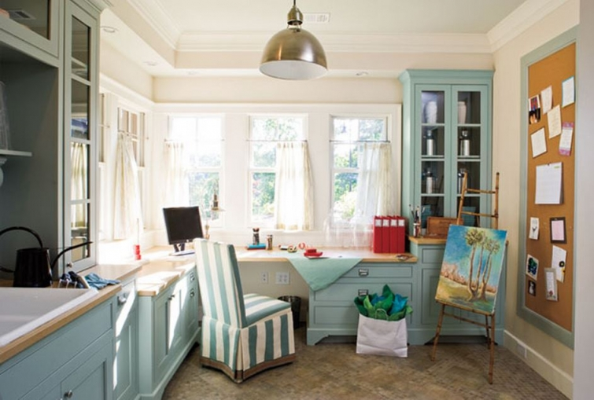
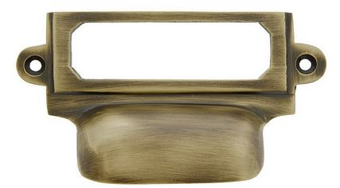

.png)
.PNG)
.PNG)
.PNG)
.PNG)
.PNG)
.JPG)
.JPG)
.PNG)
.PNG)


houseplans.southernliving.com
I had a difficult time knowing what to call my newly redone room.  Is it an office? a study? a crafts room? The photo above is from a Southern Living Idea House, and they called theirs a multipurpose room. I thought it fit the room, but boy is that a loooong name to say!  Because my room seems to be a combination of an office, a crafts room, a sewing room, and a giftwrap station, I chose to call it the workroom. Whatever you choose to call it, it is a useful space to have.  Today, I thought we would look at a few of these multipurpose rooms, and see what ideas we can steal borrow from them. 🙂
Let’s start with the room at the top.
1. Â That Idea House room has a sink, and that would be just wonderful to have! It would be helpful with plants and flower arranging in there and probably come in handy with painting projects as well.
2. The ginormous corkboard is also great in a space like that. Â Mine has fabric samples pinned all over it. (My mother nabbed one of those samples last weekend for possible drapery fabric for her dining room.)
3.  Do you see those bin pulls on the drawer by the chair? I have coveted those for some time now.  They really help with organization.  I would have used them in my workroom, except we already had our hardware leftover from other projects (and leftovers are much less expensive than new. 🙂 ) Here is a source if you need one:

3 5/8″ Cast Brass Label Holder & Bin Pull In Antique Brass. Brass File Drawer Label Holder.
(My Amazon Affiliate link.)
The next multipurpose room is a display at the Ikea store in Atlanta.  Don’t you just love all the small spaces they set up so that you can see how the furniture really works together? And what ideas can we get from here? (besides all the touches of red. 🙂 )  Let’s see…
4. Â The open bookcases provide much needed storage in the room – especially if there is no closet.
5. Colorful matching boxes in an accent color brighten up the room and give it a more unified look.
6. Â Do you see those red mesh storage bins with lids (available here) below the shelving there? Â They hold large items that won’t fit in your typical box. Â It looks like they are holding sports equipment in the room below.
I started to say that the big desk unit in the middle of the room is a good idea because of all that fabulous space, but then I started thinking about outlets. Â I would have to have some power source for my computer (and a lamp.) The only way to have that work is to have a floor outlet in the room (which I do not.)
Up next is a room that appears to be more office than crafts room. Â They have a huge corkboard like we saw in our first room, but there are more ideas for us here….
7. Â A desk hutch (like this one) can be used on top of the counter space. Â It is good for organizing office items – especially bills. Â (Our large desk unit is the desk I use for bill paying. Â My smaller desk is for blog work.)
8. Â Obviously the cabinets are nice, but I also like the mix of some open shelving with it. Open baskets with labels can easily hold craft supplies. (Michaels carries some nice chalkboard labels lately in their “Make Market” section. Â Have you seen it?)
There are really a lot of things to love in this next room. 🙂
9. Â Upper glass doors make all your supplies visible – and because they are visible you are more likely to keep them neat and organized, right?
10. Â A desk caddie is used to hold rolls of ribbon. I can’t tell from the photo if there are scissors in there with the ribbon, but that is always logical to keep them together.
11. Â An open shelf below the countertop is perfect for storing large sheets of paper.
If you don’t have an entire room to devote to crafts/projects/or home office needs, then perhaps one complete wall can handle much of it. Again a desk hutch is used on the countertop, and more good ideas….
12. Â Fabric bins for storage in cubbies specifically designed for their size.
13. Â No need for labels when you can simply write with a chalk pen on the bins themselves.
14.  Make use of the space up above your cabinets to showcase a collection. (A utilitarian room – despite the fact you have to pay the bills in there – can still be a beautiful space. 🙂 )
Even a homework station, like this next one, can be a thing of beauty. Â There are bin pulls with labels on the lower drawers and…
15.  Lined baskets hide a multitude of messy items. (I would add some kind of label to them so that I remember what is inside each. 🙂 )
16.  Jars hold art supplies – from chalk to markers to pencils…easy to see and pretty! (Got to have my jars. 🙂 )
The next room is much more industrial than what I am accustomed to, but I do like it. Â It seems to work especially well for a workroom. (Love those black spool chairs with the ticking stripe seats!) Â
17. Notice all the notebooks there? Use matching 3-ring binders to store your torn out pictures of ideas from magazines. Â Just punch holes and then organize them by subject behind tab dividers. Â I have several notebooks in the storage space under our printer. Â Two large ones hold all the manuals that came with the appliances we have purchased since we built this house.
18. Â I am not sure why there are so many stools in this room, but one stool would be handy in my workroom for reaching those high things (drapes!) in the closet.
Here is another industrial styled space that was part of the Country Living House of the Year a few years back. The desk is made from 2 desks then topped with a custom “box” making it counter height, allowing you to either stand or sit on one of the stools to work. Â The take-away ideas from this space are…
19. Â Include a roll of kraft paper in the room….useful for gift wrap, backing picture frames, making table runners, and countless other things.
20 Â Use floor lamps in place of desk lamps. Â You won’t lose valuable desktop space this way.
21. Â Woven shopping totes (like those below the desk) are great for storage and can easily be moved to other locations as needed since they have handles.
If you don’t have an entire room that can be used for a workroom or you can’t find one good wall for it, how about using a piece of furniture to help with organization? This is a Martha Stewart Living file cabinet (available here, but with mixed reviews on the quality.) Â Some ideas from here:
22. Â Gift wrap hung on wooden dowels makes for ease of access.
23. Spools of ribbon can also be hung on a wooden dowel to make measuring off needed lengths an easy task.
24. Â Rolls of giftwrap can be stored standing in a basket.
And how about Martha herself? Â What can her crafts room/office show us? Â Well how about the attic crafts room in her Cantitoe Corners home?
25.  I know all of this furniture is matching from a Martha Stewart line, but you can unify mismatched pieces by painting them all the same color.
26. Â Use acrylic drawer dividers to hold scissors and other craft supplies (but who, besides Martha has drawers that are that empty??)
27. Â Use a spice rack to help organize jars of glitter or small bottles of paint. (And again, who besides Martha has all their supplies in matching bottles?)
And now my favorite workroom from my favorite house… 🙂
Do you remember this house that was in Southern Living a few years ago?
It belongs to Curt Seymour and Kay Stanley. Â Kay is the designer behind the handbag company, Spartina 449 – located on Daufuskie Island, South Carolina. Â Her workroom is pure gorgeousness! And there are a few more ideas we can borrow from this space.
28. Â Use unusual accessories in different ways. Â The three tiered stand below was not designed for use in a crafts room, but it works beautifully for storage. Â It could hold thread, yarn, bottles of paint, rubber stamps…you name it.
29.  If the drawers in your cabinets (or furniture) do not have the bin pulls with label space like we mentioned at the start of the post, then simply add the label frames to the drawer (and put the labels in them. 🙂 )
I could work all day (and into the night) in this bright and cheery room with all the windows. 🙂

And finally, while we are wrapping up the subject of workrooms, I wanted to thank all of you for your very sweet comments about my post(s) on my new workroom. I appreciated all of them so very much! 🙂 Several of you asked if I would ever have my guest post that is featured over at A Stroll Thru Life on the blog here. My answer is, I don’t think so. But, I have updated The FAQ page (see the red bar right below the header) with all the info on the room.  I have also included some of the “pretty” photos that were featured over in the guest post.  I think you will enjoy them here because they are much larger on the FAQ page than they would be on the blog post. So click on that link at the top and enjoy. 🙂
And my final tip for your workroom is this…
30.  Work is hard, so surround yourself in this space with things that bring you joy…whether that might be fresh flowers, a live plant, photographs of people you hold dear, a bright red cup of black coffee, or even a red toy VW beetle. Make it a happy space. 🙂
What would you put in your dream workroom?


.PNG)
Love the last room you featured. That is my dream room. How wonderful to craft, sew, read…..while being surrounded by nature. I think it is my inner desire for that glassed in porch, I wish to still add on to our current home 🙠I had a small glassed porch with our first home. I miss it. Isn’t it nice to have your own space now Kelly? Your room turned out wonderful.
——————————————————————-
Wasn’t that room with all the windows just perfection?? Glad you loved it too. I would like to glass in our porch (and add a fireplace while we are at it! 🙂 ) Yes, it is quite wonderful to have my own space, but even more wonderful to have it all organized! LOL Glad you liked the room.
Kelly
Love this post! I’m creating my own craft-office room right now and it was really hepfull!
———————————————————————
I’m so glad you could find ideas here that you could use Carmen. 🙂
Good luck with your project.
Kelly
Kelly,
What great inspiration to create a space that can help make work more enjoyable. I really like your workroom, but how great to see the ideas posted that use maybe just a small space in another room to help with the heavy lifting of work.
All of these rooms are beautiful.
xo,
Karen
———————————————————————–
Thank you Karen. There are so many good ideas out there. I know everyone does not have the space to devote an entire room for working on things, but there are good ideas for utilizing small spaces to make them more efficient. That is exactly what my son is going to have to do with his 180 square foot apartment at Yale next year.
Kelly
I just love all these rooms. So much eye candy here and great ideas to incorporate as well. I wonder how I can set up a roll of kraft paper on the wall. (hmmm! I will have to think how to do this!) I love what you have done in your workroom!
———————————————————————-
Thank you Anita. Who would have thought that rooms used for work could be such nice spaces?! I am glad you liked all the rooms. I am not exactly sure what you need to hang a large roll of paper on the wall. I bet if you asked at Lowes or Home Depot they could find a solution for you.
Good luck with the project!
Kelly
I think the workroom is the perfect name and so many great tips and spaces! I just know that if I had such a multipurpose room I would be more organized…really I would probably just have more “stuff”!! Love the idea of surrounding yourself with things you love…can’t have enough fresh flowers…
———————————————————————
Thank you! Yes, it would make you a more organized person. LOL You are so right about never having enough fresh flowers. I would put them in every room!
Kelly
I’m smiling cause I just clicked over to Stroll thru Life and I figured your fabric samples covered cork board would be checks! 😉 I love them too. then I realized you might be the one who has seen outsized Gigham buffalo checks in a lilac or lavendar shade. Let me know if you run across a source for them please.
——————————————————————–
You figured right Pamela! Try this fabric to see if it meets your requirements: http://www.decorativefabricsdirect.com/Covington_REAGAN_450_LILAC_Fabric_p/6839016.htm
kelly
Wonderful workrooms! Now if I could only get all my “stuff” organized! I have been downsizing for a few years but still have way too much! I like how the furniture is one color and how the accessories all look like they go together. I think I need to decide on a color scheme and stick with it! I know I like white furniture so that is a start! Love these ideas! Thanks, Kelly!
——————————————————————-
I’m so glad you liked them. Yes, liking white furniture is a great start. It will look more cohesive if you choose a color scheme and stick with it. 🙂
Good luck with getting all your things organized!
Kelly
I love all the ideas! Those wrap around windows in the last one are fabulous. Honestly, your room is “publish” worthy. 🙂
———————————————————————
Gosh Gina, thank you for the very kind compliment! I am glad you liked all the workroom ideas here!
Kelly
I hope you enjoy that new workspace! Stealing your red photo box storage for my closet. All of these rooms are drool worthy. Tucked in my dream book. Space is a premium in old farmhouses.
——————————————————————-
I am most definitely making good use of all the areas of the room – even the bill paying area. Steal that photo box idea all you want. I love those boxes!
Kelly
Wow, each workroom is better than the next, and you definitely saved the best for last.
Workroom makes me think of Barbara Westbrook’s Workbook (thank you for the introduction), and how appropriate is a workbook for a teacher? All good connotations for a happy, creative space.
———————————————————————
That workroom in the South Carolina house is one to dream about. It is gorgeous with all those windows, isn’t it? Love Barbara Westbrook’s Workroom too. I had not thought about a workroom for a teacher, but yes it does fit. 🙂 Thank you for your kind comment here Vicki!
Kelly
Work! (Maynard G. Crebs’ voice.) What work? That word has such a bad connotation. How about your playroom? You’re retiring. This room is supposed to be for fun stuff (except for maybe paying the bills). A place for your creativity and personal expression (though your whole house is a laboratory for that as you’ve shown us). I know a blog IS work, but I imagine you do it because you enjoy it. I think the emphasis should be more on fun than work. Maybe a playroom in the fun house? Ha!
I love all the examples you’ve shown, my favorites being the first one and the Daufuskie Island one. I can only dream of the space. I can remember at furniture market in High Point one year seeing a Martha Stewart Collection armoire designed as a gift wrap station. All the women loved it and wanted it, but it didn’t make the cut because most of the buyers and all the furniture execs were men and they just didn’t get it. So it never made it in the line. We women knew we could have sold it and were so disappointed.
———————————————————————-
Work does not always have to be bad. I think productivity is a good thing, so work is not always something negative. Yes, it will be for me to be creative and play 🙂 …but we already have a playroom here, so I am afraid I can’t call it that.
A gift wrap station would be wonderful. You are right. The men just don’t get it, do they? Ha. Yes, it would have sold.
Kelly
I love all these multipurpose rooms and all those windows in Kay’s are just gorgeous. I wish I had a room like any of these. I love all the cool things that you find…you are my “go to” person.
———————————————————————
I’m so glad liked all the rooms Cheri! That one with all the windows…yes, just gorgeous. And like you, I would love to have a room like that.
Kelly
Great post you have put together! I love the one next to last with the windows all around and you are looking out into the treetops.
——————————————————————
Thanks Ellen! I loved that room too. Those windows…wow!
Kelly
Kelly, these are wonderful ideas. And you are right, surrounding the workspace with pleasant things makes the work a bit easier! I love how your workroom turned out. You and your husband did a great job!
———————————————————————
I’ll send your compliments along to my husband. 🙂 He will appreciate it! Thank you so much for your kind comment Benita.
Kelly
I converted one of our upstairs bedrooms to my craft studio about 5 years ago and love having my own space. I do a lot of papercrafting – cards and mini albums and it’s great to have a designated place for me to create. I have never had my own room as I’m a twin and always shared a bedroom and went from living at home to being married. I love finally having a room I can call my own! I loved seeing all the work spaces in your post.
———————————————————————–
I’m so glad you have a space of your own to enjoy Jackie. It is wonderful to have that kind of room to work in, isn’t it? I’m happy you enjoyed seeing all the workrooms here today.
Kelly
Great post! I learned so much. Great advice to surround yourself with things that bring you joy. Thanks!
———————————————————————-
Glad you enjoyed it Anne. Yes, do surround yourself with beauty. 🙂
Kelly